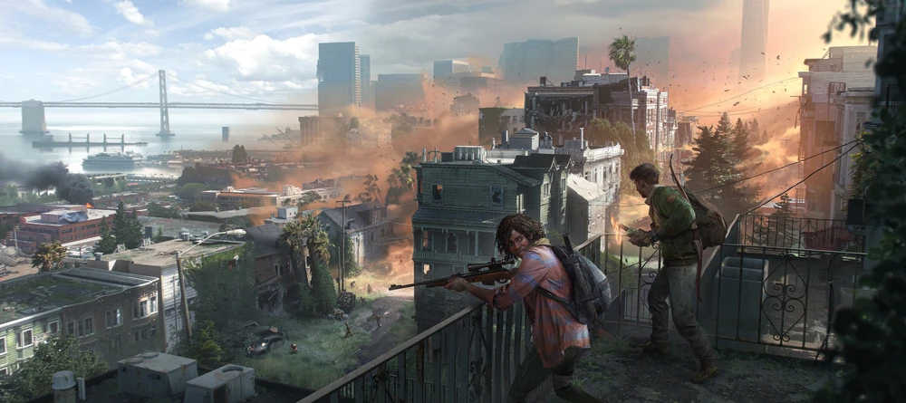

THE LAST OF US ONLINE
Associate Technical Designer
My Work
I developed host-authoritative multiplayer systems focused on replication, synchronization, and state consistency under latency and packet loss. I also designed and implemented state machines to coordinate gameplay logic across networked clients.
I owned the implementation of network-synchronized scavenging mechanics for a multiplayer looter-shooter, collaborating across engineering, design, art, and animation to define requirements and deliver player-facing gameplay systems.
My work included cooperative and solo interactions such as lock picking, container prying, garage-door hoisting, door breaching, and tap-and-hold interaction systems.